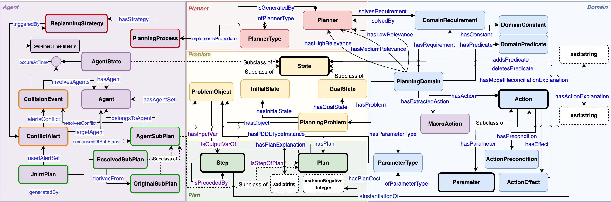

Contributions and Next Steps
1
Planner-agnostic maPO schema
A unified ontology for MAPF traces, conflicts, revisions, and provenance across planner families.
Schema
2
Standards-based ontology alignment
Alignment with Planning Ontology, PROV-O, SOSA, and TIME keeps the model interoperable and extensible.
Standards
3
SPARQL-driven explanation framework
The same graph supports segmentation views, provenance walkthroughs, and generated explanation templates.
Framework
4
Readability and user-study validation
We evaluate explanation quality through readability analysis and a within-subject user study against raw traces.
Evaluation
References
[1]
Almagor, S. and Lahijanian, M. (2020) ‘Explainable Multi Agent Path Finding’, Proceedings of the 19th International Conference on Autonomous Agents and MultiAgent Systems (AAMAS ’20), pp. 34–42.
[2]
Kottinger, J., Almagor, S. and Lahijanian, M. (2022) ‘Conflict-Based Search for Explainable Multi-Agent Path Finding’, Proceedings of the International Conference on Automated Planning and Scheduling, 32(1), pp. 692–700.
[3]
Brandao, M. et al. (2022) ‘Explainability in Multi-Agent Path/Motion Planning: User-study-driven Taxonomy and Requirements’, Proceedings of the 21st International Conference on Autonomous Agents and Multiagent Systems (AAMAS ’22), pp. 172–180.
[4]
Bogatarkan, A. (2021) ‘Flexible and Explainable Solutions for Multi-Agent Path Finding Problems’, EPTCS, 345, pp. 240–247.
[5]
Sharon, G. et al. (2015) ‘Conflict-Based Search for Optimal Multi-Agent Pathfinding’, Artificial Intelligence, 219, pp. 40–66.
[6]
Boyarski, E. et al. (2015) ‘ICBS: The Improved Conflict-Based Search Algorithm for Multi-Agent Pathfinding’, Proceedings of the International Symposium on Combinatorial Search, 6(1), pp. 223–225.
[7]
Muppasani, B. et al. (2024) ‘Building a Plan Ontology to Represent and Exploit Planning Knowledge and Its Applications’, Proceedings of the Eighth International Conference on Data Science and Management of Data (CODS-COMAD ’24).
[8]
Muppasani, B., Dey, R., Srivastava, B., & Narayanan, V. (2026). ‘OMEGA: An Ontology-Driven Tool for Explaining Multi-Agent Path Finding’. Proceedings of the AAAI Conference on Artificial Intelligence, 40(48), pp. 41643-41645. https://doi.org/10.1609/aaai.v40i48.42367

Future Tutorial Announcement
Planning Ontology: A Tutorial on Knowledge Representation and Explainable Planning
Paper
Thank You!Questions?